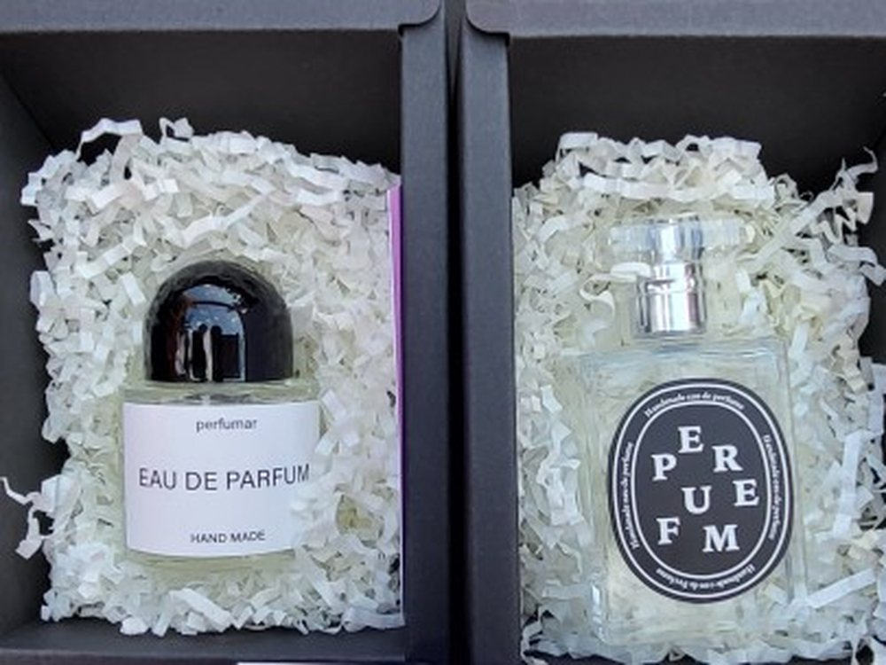

여행에서 가장 오래 남는 감각은 향입니다. 같은 향을 다시 맡으면 그날의 제주가 돌아옵니다.
그래서 이 프로그램에서는 참여자가 제주에서 느낀 색과 인상을 직접 향으로 조합합니다. 시향하고, 고르고, 섞어서 라벨까지 붙이면 — 세상에 하나뿐인 기념품이 됩니다.
관광 프로그램의 체험 코스로, 기관·행사의 기념품 제작으로 그대로 쓰실 수 있습니다.

공방의 대표 수업
인원과 시간에 맞춰 골라 주세요 — 재료는 공방에서 챙겨 갑니다.
아래는 대표 구성입니다. 대상·계절·예산에 따라 조정해 제안드립니다.
| 프로그램 | 시간 | 결과물 | 이런 자리에 |
|---|---|---|---|
| 나만의 시그니처 향수 | 60~120분 | 10~30ml 향수 1병 | 관광 체험 코스 · 단체 기념품의 기본형 |
| 아로마 롤온 | 60~90분 | 롤온 1개 | 짧은 일정 · 가장 부담 없는 입문형 |
| 인센스 · 왁스 타블렛 | 90분 | 타블렛 1~2개 | 공간에 두는 기념품 — 향이 오래 남습니다 |
| 아로마 캔들 | 90~120분 | 캔들 1개 | 연말 · 기념일 · 행사 답례품 |
소요 시간에는 사전 세팅(약 30분)과 뒷정리(약 20분)가 포함되어 있지 않습니다. 이 두 가지는 저희가 별도로 진행합니다.
기관 · 행사 기념품
행사 이름을 붙여 드립니다.
로고 · 문구 라벨
기관 로고나 행사 문구를 넣은 라벨을 제작해 붙일 수 있습니다. 참여자 전원에게 남는 기념품형 결과물이라, 기념일·창립행사에 특히 잘 맞습니다.
수량 · 단가 상담
인원과 예산을 알려주시면 프로그램과 결과물 구성을 맞춰 견적을 드립니다. 상담과 제안은 무료입니다.
향 조합이 더 궁금하시면 조향 페이지에서 전체 프로그램을 보실 수 있습니다.